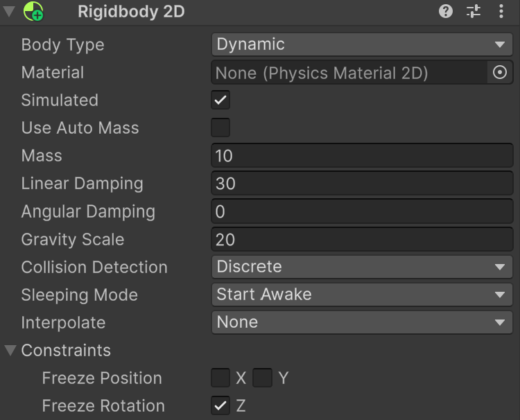
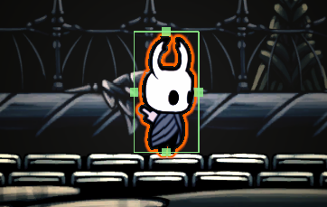
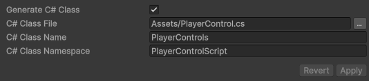
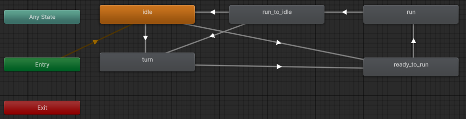
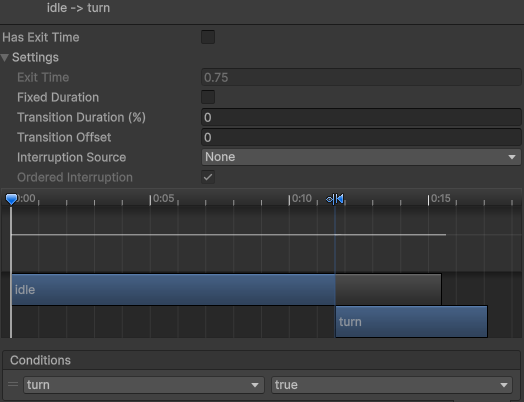
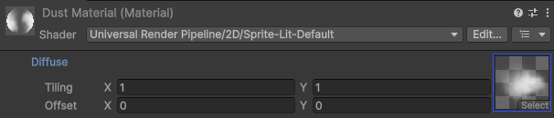
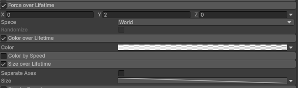

空洞騎士重現 - 移動
上一篇學會了空洞騎士中的基本場景建置後，這回來讓我們的小騎士動起來吧，一旦玩家按下的方向鍵，許多事情會一起發生，包含動畫、粒子特效、腳色的物理數值、以及鏡頭等等，內容有點多，所以這篇文章會專注介紹腳色的水平移動處理，至於鏡頭以及比較複雜的跳躍就等後續介紹了~~~
重現場景
這次把場景換到了宮殿廣場，就是位在白色宮殿入口左側的地方，實際上重建布景需要用到的 sprite 如下:
- 宮殿廣場場景 - 前景背景 sprite 都是取自這邊，有意思的是 sprite 其實與白色宮殿使用的一模一樣，只是透過調整色調來產生差異，蠻合理的，畢竟兩邊其實是同個地方不同時代而已。
- 小騎士 Move 動畫 - 會使用 005.Run, 048.Turn, 049.Run To Idle，部分畫面有紅框框，可以參考 Day2 去除，另外就是找到的 Run 畫面與原版影片不符，動作上比較像是快走，所以重現上會有點落差 ><。
Rigidbody & Collider
為了讓小騎士能在地面上進行移動，需要替他加上兩個 components:
-
Rigidbody 2D - 賦予物件物理性質，像是速度、重量等等，這些特性都能在程式中透過 rigidbody 進行操作，有些預設值可以先設定:
- Mass - 質量，跟著名的物理公式 F = ma 有關，可以想成質量越大，受力後加速度會越小，這邊就設一個定值就不要再調整了，後續控制力的大小來決定加速度。
- Linear Damping - 線性阻力係數，當物體移動時會出現一個反方向的阻力，就是這個力量決定了物體會花多久才停下來，推薦觀看這部影片介紹關於阻力與慣性對遊戲操作的影響，在空洞騎士中，小騎士的水平移動幾乎是立即反應的，按下按鈕就前進、放開按鈕就停下，立即前進可以透過加大施力達成，至於要立即停下來就得透過這個 linear damping 了。
- Angular Damping & Rotation Z - 由於小騎士並不會有旋轉方面的特效與移動，所以關於角度的設定都是關閉的 => Freeze Rotation Z。
- Gravity Scale - Unity 提供操控重力的大小，這很有用，尤其當我們把 linear damping 調大後，導致預設的重力大小不足以讓腳色快速落下，因此我們調大 20 倍，主要會在之後的跳躍與落下派上用場。

- Box Collider 2D - 賦予物件碰撞的功能，也就是常聽到的碰撞箱，點選 edit collider 後會出現下圖這種框線，預設通常會很準確框住小騎士，但這邊會把下框線稍微拉高一點，這樣才不會出現腳色懸空的問題，此外要讓腳色與地板產生碰撞，每塊地板都得加上 box collider 才行。 
InputSystem
網路上有介紹很多讀取鍵盤指令的方式，但現在 unity 專案都有內建一個 InputSystem 的檔案能幫助創作者快速地取得輸入事件，此檔案通常位於Assets/InputSystem_Actions.inputactions，快速點擊檔案兩下會開啟編輯視窗，可以看到底下這種內容，會發現他已經預設好了基本的 WASD 跟方向鍵了!!!
唯一要做的事情是在 Inspect 視窗中點選生成 C# Class，如下圖:
這樣可以讓 Player 的控制程式去 import 然後就能透過 controls 來取得鍵盤的操作了:
using UnityEngine;
using PlayerControlScript;
public class Player : MonoBehaviour
{
PlayerControls controls;
void Awake()
{
controls = new PlayerControls();
}
}
Move Script
取得 InputSystem 後，在 Awake 內替 controls 設定按鍵觸發時要呼叫的 function，Move 是 InputSystem 預設的 Action，不論是按 WASD 還是方向鍵都會執行 performed 設定的 function - 將按鍵代表的二維向量保存下來到一個全域 Vector2 變數 moveInput，當放開按鍵，就把保存數值歸零:
controls.Player.Move.performed += ctx => moveInput = ctx.ReadValue<Vector2>();
controls.Player.Move.canceled += ctx => moveInput = Vector2.zero;
之後就可以在 FixedUpdate 裡面根據 moveInput.x 來判定現在是往右往左或是靜止不動，這邊同樣透過 force + 限制速度的方式來實現，兩個數值都設定為 10，另外在向右移動時，會把 sprite 水平翻轉，為了讓小騎士面對右邊移動，完成到這個部分後，你會得到一個會隨方向鍵水平漂移的鬼魂，接著是加上跑步的動畫來讓移動更自然。
// rb = GetComponent<Rigidbody2D>();
// sr = GetComponent<SpriteRenderer>();
void FixedUpdate()
{
Vector2 force = Vector2.zero;
if ( moveInput.x > 0 ) // move right
{
force.x = MOVEFORCE;
sr.flipX = true;
}
else if ( moveInput.x < 0 ) // move left
{
force.x = -MOVEFORCE;
sr.flipX = false;
}
rb.AddForce(force, ForceMode2D.Impulse);
Vector2 vel = rb.linearVelocity;
vel.x = Mathf.Clamp(vel.x, -MAXSPEED, MAXSPEED);
rb.linearVelocity = vel;
}
Animation State Machine
小騎士移動的動畫其實涉及到多段畫面的轉換，得透過 Animator 的狀態機來表示:
- IDLE - 這是前一篇文章用到的小騎士靜止狀態身體抖動的畫面。
- TURN - 這是短暫狀態，當小騎士改變移動方向時，會插入兩幀的轉身畫面，
IDLE -> TURN的觸發條件如下，我們希望立刻進行轉身，所以把 exit time 關閉，同時是當一個 animotr variable - turn 設為 true 時才會觸發:

using System.Threading.Tasks;
// sr = GetComponent<SpriteRenderer>();
// anime = GetComponent<Animator>();
void FixedUpdate()
{
if ( anime.GetBool("turn") != true &&
( moveInput.x > 0 && sr.flipX == false || moveInput.x < 0 && sr.flipX == true ))
{
#pragma warning disable 4014
TurnAround(200);
#pragma warning restore 4014
}
...
}
async Task TurnAround(int ms)
{
anime.SetBool("turn", true);
await Task.Delay(ms);
anime.SetBool("turn", false);
}
TurnAround function 會被偵測到 "warning this call is not awaited"，所以才加上 #pragam 來忽略檢查。
IDLE -> READY_TO_RUN 的設計跟前面一樣，不過 TURN -> READY_TO_RUN 時得讓 TURN 動畫播完才起步，需要有
exit time = 1，然後 Condition 就不用設定:READY_TO_RUN -> RUN 也是得等前面動畫播完，所以也需要 exit time = 1。RUN -> RUN TO IDLE 可以透過新增一個 animator variable - run 來判定，可以透過 moveInput.x 或是 force.x 來判定:
if ( force.x != 0 )
{
anime.SetBool("run", true);
}
else
{
anime.SetBool("run", false);
}
Animation 最後一幀通常不會停留，可以透過重複最後一幀的方式來讓畫面顯示。
Particle System
到了這個階段小騎士的移動已經很不錯了，但仔細看原版的畫面會發現移動時地上會揚起煙塵，真是很棒的細節呢，為了達成這個效果，我們需要替小騎士新增一個子物件 - Particle System 也就是顆粒特效，推薦可以看這部影片來認識基本設定，我簡單說明一下重點設定:
- 材質 - 預設的粒子系統是白色方格，我們要替換成雲霧的材質，首先創造一個 Material，然後在 inspect 視窗中設定 Diffuse，我是從 hollow knight sprite 中拿一個像是雲霧的 sprite (檔名為 wp_fog): 
- 位置 - 雲霧是在腳色後方產生的，粒子系統的 x 軸得要偏移向後，但由於腳色會左右移動，因此得設定兩組數據，由於是子物件，偏移量是相對於小騎士，腳色向右時: (-0.27f, -0.796f) 跟腳色向左時: (0.27f, -0.796f)。
- 數量 - 注意 Max Prticles 這個參數不能太小，如果你發現產生的煙塵斷斷續續的話就加大這個數值。
- 受力 - 由於煙塵產生後是向上漂移的，可以打開 Force over Lifetime，加上一個 y 軸向上的力量。
- 大小/顏色 - 觀察小騎士跑出去後，煙塵是會慢慢縮小且變透明，因此可以額外再設定 Color and size over Lifetime。 
接下來根據腳色移動情況來執行粒子系統，將本來的 Player 腳本加上一個外部變數把剛剛設定好的 Particle System 物件放進來，然後修改一下 FixedUpdate function 來根據腳色朝向哪邊調整粒子系統的位置，除了剛剛提到的要放在腳色後方以外，粒子系統會有一個噴射方向，得旋轉他不然會變成煙往前噴，最後就是在奔跑時才啟動。
// [SerializeField] ParticleSystem dustEffect;
if ( moveInput.x > 0 ) // move right
{
force.x = MOVEFORCE;
dustEffect.transform.localPosition = particlePosRight; // (-0.27f, -0.796f, 0f)
dustEffect.transform.localRotation = Quaternion.Euler(0f, 0f, 150f);
sr.flipX = true;
}
else if ( moveInput.x < 0 ) // move left
{
force.x = -MOVEFORCE;
dustEffect.transform.localPosition = particlePosLeft; // (0.27f, -0.796f, 0f)
dustEffect.transform.localRotation = Quaternion.Euler(0f, 0f, 30f);
sr.flipX = false;
}
if ( force.x != 0 )
{
dustEffect.Play();
anime.SetBool("run", true);
}
else
{
dustEffect.Stop();
anime.SetBool("run", false);
}
成品
以上就是本次的完成品ヽ(・×・´)ゞ 如果單就移動來說，我覺得有 75% 的完成度，比較大的瑕疵是粒子系統使用的 sprite 不太符合原本的紋理，以及小騎士目前的移動動畫比較像快走，感覺不該產生那麼多煙塵XD。
總結
這次學習了 InputSystem、Animation Transition、Particle System 等重要的遊戲工具來實現小騎士的水平移動，但這樣其實還不算完成，目前遊戲的鏡頭都是固定不變的，還得加上運鏡來讓畫面會隨著小騎士移動而有所改變，因此我們的下一篇文章就來介紹鏡頭系統吧。